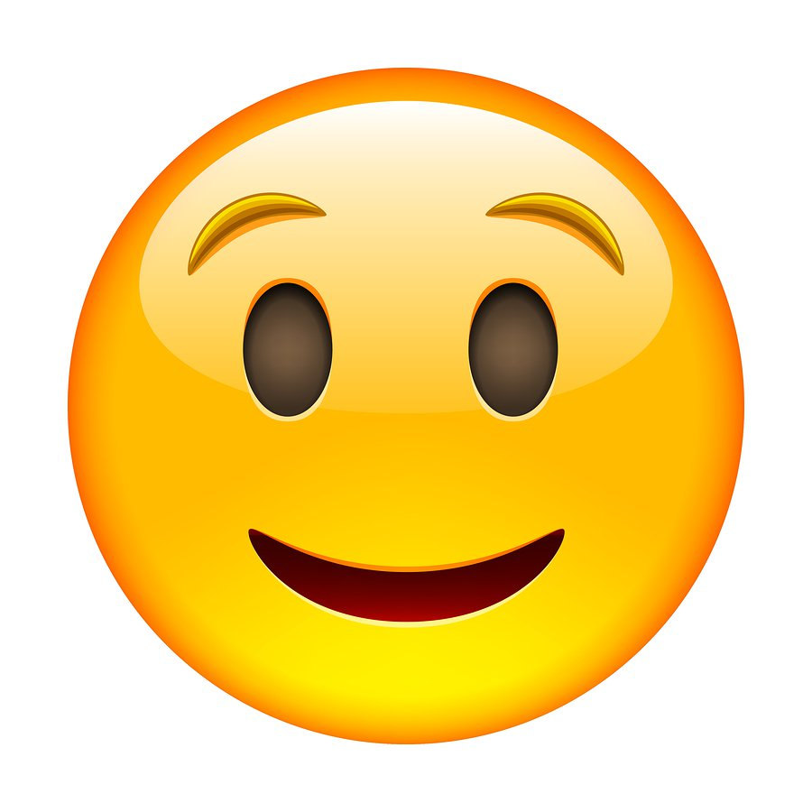

Tal vez el mejor deporte que puedas practicar en Ica. Sientes la adrenalina en un 100% y la aventura corre por tus venas. El paseo en tubulares se hace en grupo por las dunas, no es recomendable usar el selfie stick porque puede caerse de tanto movimiento. La experiencia es lo máximo.
Puedes hacerlo en Paracas y, literalmente, tendrás un paisaje hermoso a tus pies. Algunos vuelos suelen duran más de 20 minutos, por lo que sentirás la adrenalina por un buen tiempo en los cielos de Ica. Definitivamente, este debe ser uno de los deportes de aventuras que tienes que hacer en tu próxima visita a Perú.
Si bien no implica tanta adrenalina como los tubulares o el sandboarding, volar en avionetas sobre las Líneas de Nazca es una de las mejores experiencias que podrás vivir. Podrás hacer muchas actividades en Ica! Para que vivas la verdadera experiencia, contáctanos y descubre la verdadera aventura con Explorandes!

| 0 |
|---|